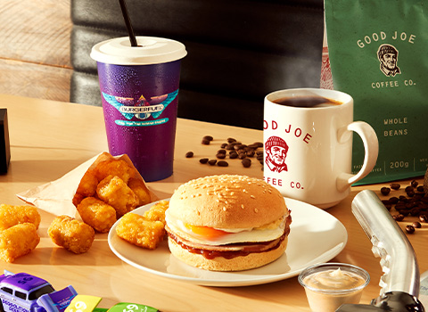
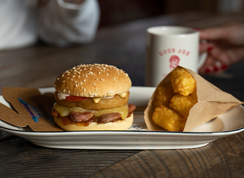
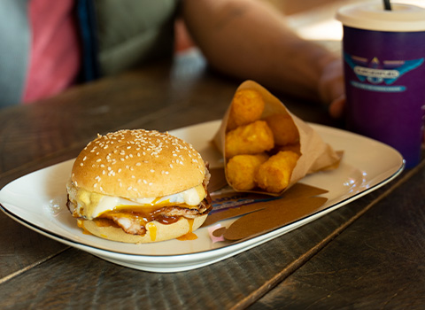

World Of BurgerFuel
Crafting Delicious Burgers with Fresh Ingredients: The Burgurfuel Story
At Burgurfuel, we believe that great food shouldn't compromise on quality or taste. Our story begins with a passion for burgers that are made with fresh, high-quality ingredients and grilled to perfection. We wanted to create a place where everyone could enjoy a delicious, mouth-watering burger in a welcoming and fun atmosphere. Our team has worked tirelessly to perfect our recipes and techniques, ensuring that every burger we serve is packed with flavor and cooked to perfection. From our signature beef burgers to our vegetarian options, we have something for everyone to enjoy. We are committed to using only the freshest ingredients and locally sourced products whenever possible, and we believe that this commitment shines through in every bite. Whether you're in the mood for a classic burger or something a little more adventurous, Burgurfuel is the perfect destination for anyone who loves great food and great company.
Fuelling the AM
Doing a solid for the early risers, BurgerFuel presents Fuelling the AM, our first ever breakfast menu, in collaboration with Good Joe Coffee Co. and available from 8am - 11am, Wednesday - Sunday. And because we want you firing on all cylinders, our all-day menu will be cranking first thing. Want a Bastard with onion rings at 8.22am? No worries.
Go full throttle with the Bratwurst 1000 burger - bratwurst sausage, crunchy, golden onion rings, melted cheddar and fresh tomato. Or brush that magnificent mullet and crash into the day with the DEGGolition Derby burger. Jump start your morning with tasty bacon and a perfectly fried egg, over easy.
Both burgers are finished off with creamy Dijon Mustard, sweet batch brewed tomato relish and free range BurgerFuel Aioli, all idling on a mini wholemeal bun
You can make it a feed by smashing one of those delectable options together with a smaller serving of crispy golden Smash Browns with aioli and a well-rounded brew of piping hot bottomless Good Joe Coffee* or a Good Joe Espresso Thickshake, made with real organic, fair trade espresso extract, for a legit coffee hit.
P.S. Sorry for the egg-sessive use of egg puns. We couldn't help ourselves.
Fuel your AM Wednesday to Sunday, 8am - 11am, nationwide and for a limited time only.
*Good Joe coffee available at select stores, breakfast hours only (bottomless option in store only). Good Joe Espresso Shake available nationwide and all hours.
